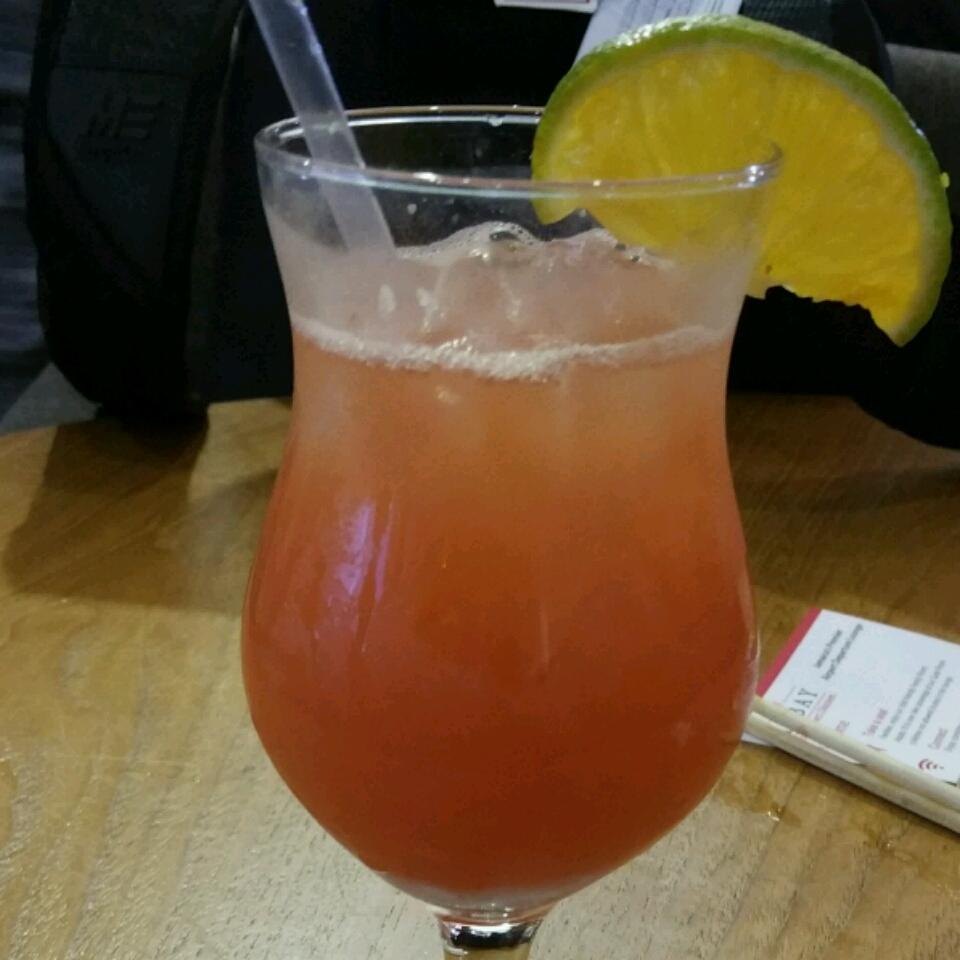

Jamaican Rum Punch

Description
Easy recipe for homemade Jamaican Rum Punch
- Prep: 10 mins
- Total: 10 mins
- Servings: 8
- Yield: 7 cups
Ingridients
- 2 ½ cups pineapple juice
- 2 ½ cups orange juice
- 1 cup 151 proof rum (such as Bacardi®)
- ½ cup dark rum (such as Meyer's®)
- ¼ cup coconut-flavored rum (such as Malibu®)
- ¼ cup fresh lime juice
- 3 tablespoons grenadine syrup
- 1 orange, sliced
- 1 lime, sliced
- 1 lemon, sliced
Steps
-
Stir pineapple juice, orange juice, 151 proof rum, dark rum, coconut-flavored rum,
lime juice, and grenadine syrup together in a punch bowl. Float orange slices, lime slices,
and lemon slices in the punch.
Back